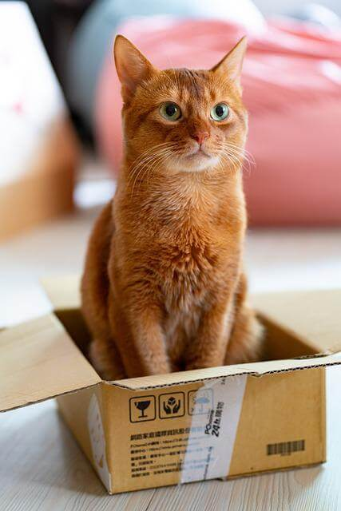
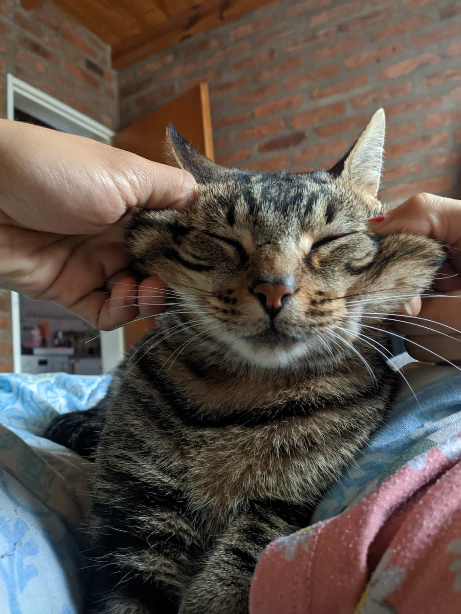
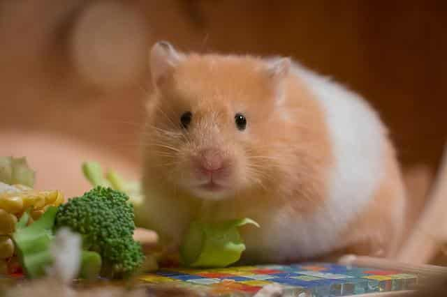

Disfrutemos juntos de las mascotas más lindas de la ciudad!
Nuestros perritos
Coki
Él es Coki, un caniche de 3 añitos. Le gusta jugar a buscar la pelota.

Gordo
Él es Gordo, un golden de 7 años. Fue adoptado un día de lluvia.

Nuestros gatitos
Garfield
Ella es Garfield, una gata de 2 años. Le gusta juagr con su dueña.
Kion
Él es Kion, un gato de 3 años. Ama dormir con su dueño y ser mimado.
Nuestros hamsters
Lila
Ella es lila, una hamster de 4 meses. Le encanta comer brócoli y apio.
